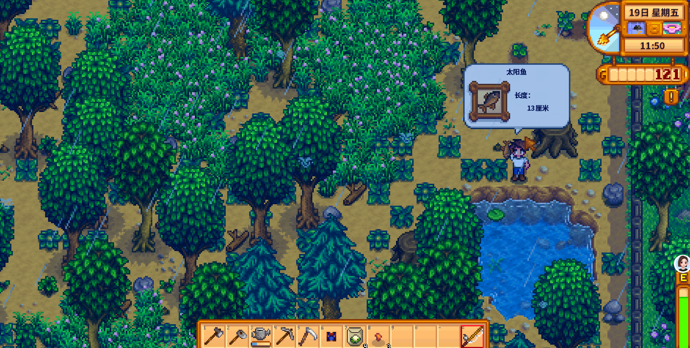

Quick answers (read this first)
- Rain = skip watering outdoor crops.
- Check TV the night before when you can—wake knowing the plan.
- Best rainy spends: mines, fishing practice, chopping.
- Still pack food; rain does not refill energy.
- Do not try mines + ocean fishing + full clear in one rain day.
Who this is for
Use this if rainy mornings feel empty or you still water by habit. Many new players treat rain as a bonus day and then burn out before noon because they planned too much. A rainy day in Year 1 is really an energy gift: the game already handled your biggest morning chore, so you can redirect that time toward something you normally postpone.
Version note: This guide reflects Stardew Valley 1.6-era quality-of-life habits. Storms and lightning add extra considerations later in the save, but in Year 1 the main win is free watering. If you play on console or mobile, the rain icon and TV forecast work the same way—the planning mindset matters more than platform.
Pros & cons
| Details | |
|---|---|
| Pros | Biggest energy gift in early game; skill days for mining and fishing; good for clearing stumps and logs without watering guilt. |
| Cons | Easy to overcommit and faint; some festivals and shop hours are unaffected by weather; indoor pots and greenhouse tiles still need attention. |
| Use when | HUD shows rain, you have food, and you know your one main goal. |
| Skip heroics when | No food, already tired from yesterday, or you have a festival deadline the same afternoon. |
What rain actually does
Outdoor crops on your farm get watered automatically overnight when it rains. That means you can walk past the sprinkler or watering can and head straight to the mines, the forest, or the beach. Rain does not restore your energy bar, heal you, or water crops inside buildings unless the game rules for that specific setup say otherwise.
Many new players still click every tile out of muscle memory. Break that habit early: confirm rain on the HUD, glance at your outdoor patch once if it helps you relax, then leave. The time you save is real, even on a small Spring plot.
Interactive checklist
Safe to skip (anti-FOMO)
- Watering outdoor crops in rain “just in case.”
- Triple-goal rainy schedules that combine deep mines, full farm clear, and town errands.
- Staying out until 2am because “rain makes it free.”
- Ignoring animals or indoor pots if those are part of your daily routine.
Decision table
| Goal | Rain plan | Bring |
|---|---|---|
| Ore / elevators | Mines | Sword + food |
| Fishing skill | Pond/lake practice | Rod + food |
| Wood | Farm clearing | Axe |
| Recovery | Town errands only | Nothing fancy |
Energy budget table
Rain saves watering energy, but the rest of the day still costs energy. Use this rough priority table to pick one main activity instead of stacking three.
| Activity | Good for rain because… | Stop when… |
|---|---|---|
| Mines | You skipped watering and can dive early | Food runs out or health gets low |
| Fishing | Practice without crop pressure | Inventory fills or bar hits Exhausted |
| Farm clearing | Axe work fits a home-body day | Needed wood is gathered |
| Town chores | Low-stress if yesterday was brutal | Errands done—go sleep |
Season timing table
| Season | Rainy day lean | Why |
|---|---|---|
| Spring | Mines or fishing practice | Crop patch is small; skills matter early |
| Summer | Mines or selective clearing | Bigger fields mean rain saves more time |
| Fall | Mines or bundle prep | Good week to push elevator progress |
| Winter | Mines, fishing, or social | No outdoor crop watering anyway |
Real screenshots

Game screenshot © ConcernedApe — used for guide commentary

Game screenshot © ConcernedApe — used for guide commentary

Game screenshot © ConcernedApe — used for guide commentary
Operations
Follow this eight-step loop on rainy mornings. It keeps Year 1 predictable without turning weather into a min-max puzzle.
- Wake and confirm rain. Check the weather icon on the HUD. If you watched TV last night, you already know—still verify once so you do not water by reflex.
- Handle non-negotiables. Pet livestock, grab artisan goods, or check indoor pots if those are part of your routine. Rain does not replace other chores.
- Skip outdoor watering. Walk away from the crop patch unless something unusual needs fixing (like a misplaced sprinkler).
- Pick one main goal. Mines, fishing, or clearing—choose before you leave the farm. Write it on a sticky note if you tend to drift.
- Pack food and free inventory slots. Rain saves watering time, not hunger. Empty a row of bag space for ore, fish, or wood.
- Execute the plan until a clear stop signal. Low health, no food, full inventory, or the Exhausted debuff means go home—not “one more floor.”
- Ship and sort on return. Drop ore in a chest, put fish in a fridge or shipping bin, and note what you learned for next rain.
- Sleep with energy left if possible. A rainy day should leave you ahead, not recovering from a faint on the farmhouse steps.
Alternative variations
The home-body rainy day
Some players rarely leave the farm on rain. They clear stumps, organize chests, craft fences, and talk to passing villagers at the bus stop area. That is valid Year 1 play—especially if mines still feel scary or you are saving energy for a festival tomorrow.
The skill-grind rainy day
Other players treat every rain as a mining or fishing appointment. They pack stacks of cheap food, push elevator progress, and accept a nearly empty energy bar at bedtime. That works if you enjoy the grind, but pair it with food and an exit rule so one rainy day does not wreck the whole week.
Common mistakes
- Watering anyway. Muscle memory wastes the biggest gift rain gives you. Confirm weather once, then redirect that time.
- No food in the mines. Skipping watering does not fill your stomach. Many new players faint on floor five because they treated rain like free infinite energy.
- Triple-goal schedules. Mines plus beach fishing plus full farm clear in one day sounds efficient and usually ends in a shipping-bin panic at 1am.
- Ignoring the TV forecast. You do not need to min-max weather, but checking the forecast the night before lets you prep food and pick a goal before morning rush.
- Treating rain as a reason to stay until 2am. Extra daylight energy is not extra sleep credit. Go to bed tired but alive; tomorrow’s crops still need you.
FAQ
Do indoor crops need water in rain?
Rain waters outdoor farm tiles automatically. Crops in the greenhouse, indoor pots, and garden pots follow their own rules—check those tiles if you use them. When in doubt, hover or attempt watering once; the game will tell you if it is unnecessary.
Is rain required for fishing?
No. You can fish any day. Rain is simply a convenient practice day because you skipped watering and may have more time near ponds and lakes.
Does rain water crops in the greenhouse?
No. Greenhouse crops behave like indoor farming space. Plan sprinklers or manual watering there regardless of weather.
Should I go to the mines every time it rains?
Mines are a strong default in Year 1, but not mandatory. If you need wood for Robin, fishing skill for a bundle, or a low-stress day after fainting yesterday, pick the plan that matches your save—not a checklist online.
What about storm days and lightning?
Storms still skip outdoor watering. Later saves may care about lightning and batteries; in early Year 1, treat storms like rain plus a reminder to keep a few chests organized at home.
Related
Unofficial fan guide. Not affiliated with ConcernedApe or the original developers of Stardew Valley.